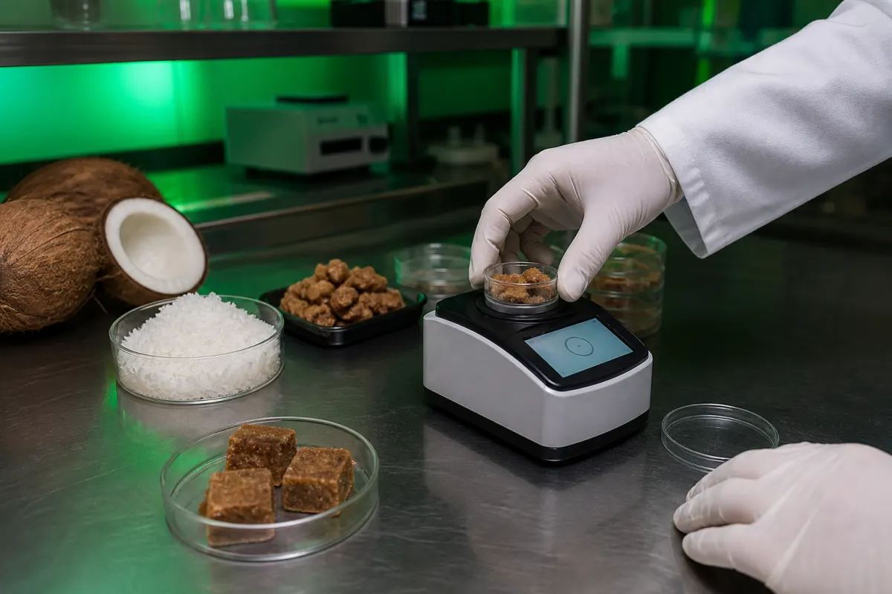

Spices & seasonings
Custom spice blends, rubs, marinades and coating systems for retail, food service and manufacturing.
Food science, flavour development and practical R&D for brands bringing better food experiences to market.
Custom spice blends, rubs, marinades and coating systems for retail, food service and manufacturing.
Roasting, flavouring and coating development, with attention to flavour delivery, texture and consistency.
Date, nut and seed bar concepts, from ingredient selection and prototypes to production direction.
How should it taste? What gives it the right texture? Can the process deliver the same result at scale?
We connect ingredient research, sensory evaluation and structured experiments to help answer those questions.
See our development process →
Bring us your product idea, target market and the challenge you want to solve.
Talk to Roza Labs ↗